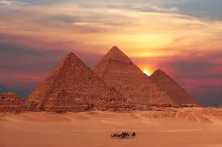

The Pyramids of Giza are one of the most famous historical landmarks in the world. They were built in Ancient Egypt over 4,500 years ago and are considered one of the Seven Wonders of the Ancient World. Millions of tourists visit the pyramids every year to explore their history and admire their impressive architecture.
